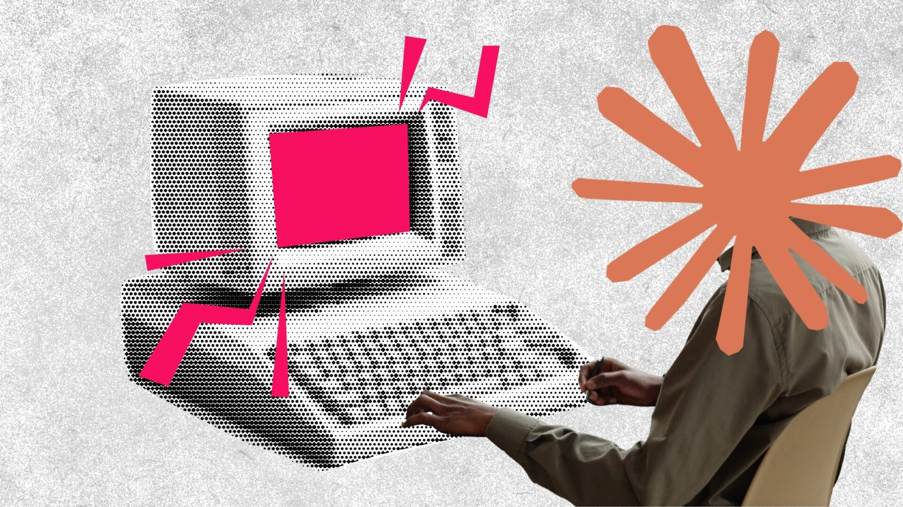
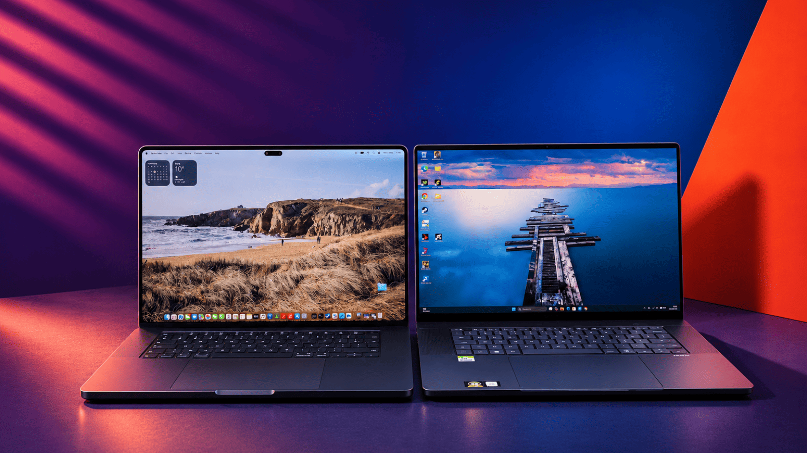
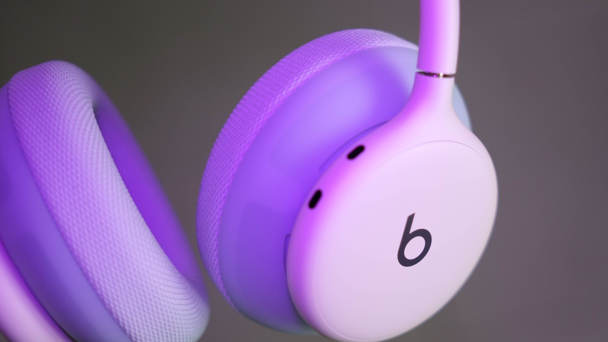
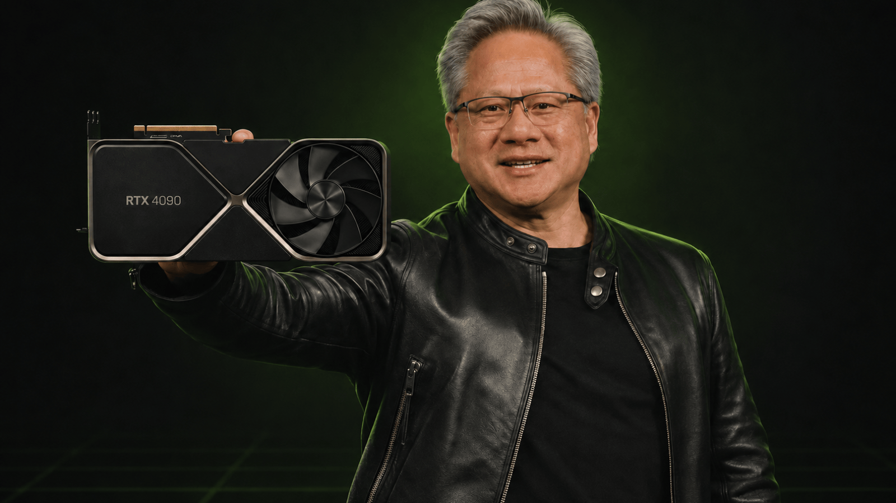

Tech Daily — Le brief du jeudi 12 novembre 2026
Six lectures pour comprendre les outils derrière les promesses : agents créatifs, sécurité des modèles, IA locale, audio et jeu vidéo. Le comparatif du 5 novembre est une lecture de fond, pas une annonce du jour.
1/6 — Adobe veut laisser les agents travailler dans vos fichiers, sans tout leur ouvrir
Frandroid · 11 novembre 2026
Une illustration des outils Adobe, et non une démonstration de leur pilotage par MCP. — Crédit non indiqué dans la page consultée.
Piloter Photoshop depuis Claude ne se résume pas à demander une image à un chatbot : Frandroid décrit une ouverture des logiciels de création aux agents extérieurs, avec un serveur MCP installé en local. Ce connecteur doit travailler sur les fichiers d’origine, en conservant des calques, des vecteurs et des timelines que l’on peut ensuite reprendre à la main. Le compte rendu des échanges avec Ely Greenfield, responsable technique d’Adobe, rend aussi très lisible le pari économique : tant que l’agent utilise Creative Cloud, son utilisateur reste client d’Adobe.
La partie la plus instructive est pourtant la limite de cette promesse, puisque le dirigeant refuse de garantir un accès à toutes les fonctions. La bêta privée est annoncée pour début 2027, sans date précise ni liste publiée des agents compatibles dans l’article. Pour la photo et la vidéo, cette lecture aide donc à imaginer un travail assisté réellement retouchable, tout en distinguant l’architecture annoncée des possibilités qui restent à démontrer.
Lire l’article original sur Frandroid.
2/6 — Lazarus : pourquoi un modèle local peut cacher une porte dérobée
Numerama · 12 novembre 2026

La sécurité d’un agent dépend aussi de l’intégrité du modèle qui le pilote. — montage Numerama.
Numerama explique comment les chercheurs de Microsoft ont piégé des agents sans réentraîner leur modèle, en modifiant seulement sept neurones dans les expériences rapportées. Le mécanisme utilise des neurones peu actifs comme des interrupteurs, qui ne se réveillent qu’en présence d’un déclencheur dans le contexte. À ce moment-là, l’agent peut produire puis exécuter une commande malveillante avec les accès dont il dispose : la différence avec un simple chatbot devient très concrète.
L’article précise qu’il faut pouvoir écrire dans une version du modèle pour préparer cette attaque, ce qui renvoie à la sécurité des comptes, des pipelines et du stockage plutôt qu’à une contamination spontanée. Il donne aussi une limite aux défenses testées : les agents chargés d’inspecter les poids ont repéré 91,4 % des modèles piégés, mais ont accusé à tort près d’un modèle sain sur dix. L’intérêt du décryptage est de déplacer la discussion sur les agents locaux vers l’intégrité de leur chaîne de distribution, sans transformer une expérience de recherche en preuve d’infection de votre installation.
Lire l’article original sur Numerama.
3/6 — IA locale : le bon portable dépend aussi du temps passé à lire vos prompts
Frandroid · 5 novembre 2026

Deux plateformes à mémoire unifiée, des forces différentes selon la phase du travail IA. — Ulrich Rozier pour Frandroid.
Ce comparatif de Frandroid, publié le 5 novembre et retenu pour la richesse de ses mesures, oppose un MacBook Pro M5 Max et un Asus ProArt P16 équipé de la puce Nvidia RTX Spark, tous deux dotés de 128 Go de mémoire unifiée. Ulrich Rozier utilise les mêmes fichiers de modèles et la même version de llama.cpp, ce qui permet de comprendre les écarts au-delà des fiches techniques. Dans ses essais, le Mac génère le texte plus vite, tandis que le RTX Spark ingère les longs prompts plus rapidement sur les deux modèles détaillés pour cette épreuve.
Cette distinction entre lecture du contexte et écriture de la réponse est particulièrement utile pour des agents qui enchaînent des consultations de fichiers. En génération d’images, le test donne au contraire l’avantage au RTX Spark, mais précise que les deux plateformes utilisent des formats de calcul différents, ce qui évite de confondre comparaison d’usage et duel parfaitement identique. La lecture complète mérite surtout le détour pour ces précautions, les limites logicielles et les protocoles d’autonomie explicités, plutôt que pour chercher un vainqueur universel à partir d’un seul débit de tokens.
Lire l’article original sur Frandroid.
4/6 — Beats 360 : le maintien sportif ne suffit pas à faire un bon casque
Frandroid · 11 novembre 2026

Le maintien sportif ne dispense pas d’examiner le confort et la courbe sonore. — Tristan Jacquel.
Le test du Beats 360 confronte une idée séduisante à ses compromis : conserver un casque enveloppant pour le sport, avec une protection IPX4 et des coussinets remplaçables par rotation. Tristan Jacquel apprécie sa stabilité en mouvement, mais décrit un serrage moins confortable pour les grandes têtes. Il relève environ 33 heures d’écoute avec réduction de bruit active à la moitié du volume, dans les conditions de sa playlist, plutôt que de reprendre seulement l’autonomie promise.
L’analyse acoustique explique en revanche une fatigue liée à la mise en avant des fréquences entre 2 et 3 kHz, sans égaliseur intégré sur iOS ou Android pour la corriger. Le journaliste relève également l’absence de capteur de port et un port USB-C réservé à la recharge, qui ne permet pas d’écouter en filaire. Ce sont précisément la courbe de réponse, les observations de confort et ces limites pratiques qui rendent cette lecture utile pour juger le produit, au-delà de son positionnement sportif.
Lire l’article original sur Frandroid.
5/6 — La voix de Geralt : ce que l’IA retouche, et ce que le comédien garde
Numerama · 12 novembre 2026
Le nouveau doublage conserve le jeu du comédien et en retouche le timbre. — CD Projekt.
Le cas raconté par Numerama distingue la retouche d’une interprétation du remplacement de son auteur : Jacek Rozenek enregistre lui-même les nouvelles répliques polonaises de Geralt pour Songs of the Past, extension de The Witcher 3 prévue en 2027. Son timbre ayant changé après un AVC, Respeecher transforme ces prises avec son accord pour les rapprocher de sa voix du jeu original. Le modèle s’appuie sur quelque 10 000 répliques enregistrées en 2014, tandis que le jeu du comédien, ses intonations et son rythme sont conservés selon l’article.
Le récit décrit plusieurs dizaines d’heures de travail et de corrections, loin de l’image d’un doublage produit sans intervention humaine. Il rapporte aussi l’inquiétude du responsable de localisation pour l’avenir du métier, même lorsque celui-ci défend cet usage particulier. Pour qui s’intéresse au jeu vidéo et à la création audio, la valeur de cette lecture est de rendre visibles le consentement, l’enregistrement et le traitement technique, sans faire d’un cas présenté comme éthique une réponse définitive au débat.
Lire l’article original sur Numerama.
6/6 — Après Jensen Huang, Nvidia doit aussi changer son organisation
Frandroid · 12 novembre 2026

Derrière le changement de dirigeant, la question d’une organisation centrée sur son fondateur. — Montage Frandroid.
Le changement de direction de Nvidia fait déjà partie des annonces du jour ; l’analyse de Frandroid choisit un autre sujet, celui d’une entreprise organisée autour d’un seul décideur. Ulrich Rozier décrit une concentration des arbitrages techniques, commerciaux et humains qui rend la succession plus compliquée qu’un simple remplacement de patron. Il relie cette structure au personnage public du fondateur, devenu lui-même un outil de communication et une incarnation de la marque.
Le choix de Colette Kress pour l’intérim est présenté comme une continuité financière et commerciale, sans que cette continuité résolve à elle seule la question des futurs paris d’architecture. Le texte insiste donc sur la redistribution du pouvoir et sur les signaux à attendre de la nouvelle direction, plutôt que de promettre une modification immédiate des puces ou de leur feuille de route. C’est cette lecture de gouvernance, à considérer comme une analyse du média et non comme une prévision certaine, qui justifie de revenir sur Nvidia après le bref compte rendu de l’annonce dans Morning routine Tech.
Lire l’article original sur Frandroid.